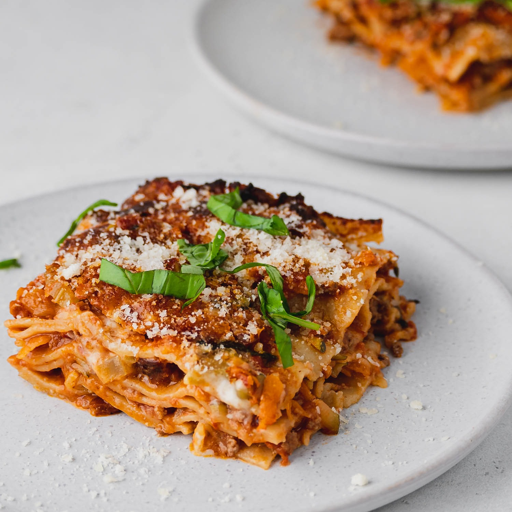

Lasagna

Lasagna is a wide, flat sheet of pasta
Lasagna can refer to either the type of noodle or to the typical lasagna
dish which is a dish made with several layers of lasagna sheets with sauce
and other ingredients, such as meats and cheese, in between the lasagna
noodles.
Ingredients
- Ground beef
- Tomato sauce
- Sheets of pasta
- Mozzarella, parmesan and ricotta cheese
- Onion and garlic
Step-By-Step
- Boil the pasta: Cook in a large pot of salted water.
- Prepare meat sauce: Cook sausage and beef with
onion and garlic. Drain well, add the tomato sauce & simmer
it for a few minutes to thicken.
- Combine cheese mixture: Stir the cheese mixture together
in a bowl.
- Layer and bake Layer the meat sauce and cheese mixture
with lasagna noodles and bake until browned and bubbly.
How to Layer a Lasagna
- Spread about a cup of meat sauce into a pan.
- Add a layer of noodles.
- Top the noodles with some of the ricotta cheese mixture.
- Repeat the layers, ending with a layer of noodles and sauce.